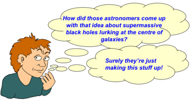

Astronomy is the study of the physics and components of the observable Universe such as the stars, planets, galaxies, clusters and the Universe itself through observation and theory.
The professional scientists who are engaged in these studies are called astronomers, or astrophysicists.

Credit: Swinburne
Observational astronomers, or “observers” specialise in observing electromagnetic radiation (light) at various different wavelength regimes, using usually large telescopes. Theoretical astronomers, or “theorists” attempt to explain observations with physical laws or make predictions that can be tested observationally. The two types of astronomers depend on one another – observers make observations with telescopes to test astronomical theories, or to try and understand unanswered questions. Theorists use these observations to improve their understanding of physical laws, and to test their models. As such the division between observers and theorists is a blurry one and the two groups are far from mutually exclusive.
In astronomy, the adjective astronomical usually means “to do with the stars” as opposed to “enormous”. ie an astronomical database might contain a list of stars.
Amateur astronomy is usually concerned with optical observations of beautiful structures/stars in the Universe although many amateurs also contribute to scientific programmes.
Astronomy should not be confused with the practice of astrology which makes claims based on superstition or supernatural causes which either cannot be falsified or have been consistently disproved.